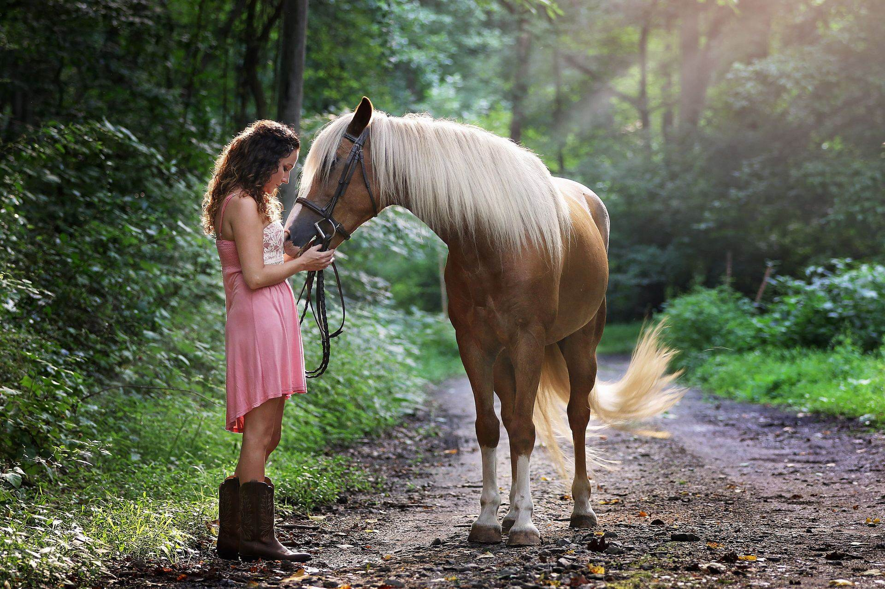

At your yard
A visit, step by step
First visits take a little longer, because getting to know your horse properly matters more than rushing to the hands-on part.
We talk first
I’ll ask about your horse’s history, workload, any injuries or vet treatment, and what you’ve been noticing.
I watch your horse move
I look at how your horse stands, and usually how they walk and trot up, to see how they’re carrying themselves.
Hands-on assessment
I feel through the muscles from poll to tail, noting heat, tension, tenderness and how your horse reacts.
Treatment
I build the session from the techniques your horse needs, watching their responses throughout and adjusting as I go.
Aftercare
Before I leave, I’ll talk you through what I found and how to look after your horse over the next few days.
Before I arrive
- Have your horse in, clean and dry.
- A quiet, safe space with level ground, out of the wind and rain if possible.
- Someone to hold your horse if needed.
- Let me know about recent vet treatment, shoeing, dental work or saddle changes.
- Your vet’s details, so I can work alongside them.
After a session
- Plenty of fresh water.
- Turnout or gentle walking, so your horse can move freely.
- A lighter day of work. I’ll advise on when to return to normal.
- Note any changes you see over the next few days and let me know.

Planning
How often should my horse be seen?
There’s no single answer. It depends on your horse’s age, workload and what we find at the first session. A horse in regular competition may benefit from routine sessions, while others do well with an occasional check.
After the first visit we’ll agree on a plan that suits your horse and your budget. For current rates, please get in touch.
Do I need my vet’s permission?
In many places the law requires a vet’s consent before anyone who isn’t a vet treats an animal. The rules differ depending on where you live, so I ask for your vet’s details when you book and I’m always happy to speak with them directly.
Can you help a lame horse?
Lameness should always be seen by a vet first. Once your vet has examined your horse, bodywork can often support their treatment and recovery plan.
Will my horse need time off afterwards?
Usually not much. I normally suggest a lighter day after a session, and I’ll give you advice specific to your horse before I leave.
What if my horse doesn’t like being touched?
That’s more common than you’d think, and it’s often a sign of discomfort. I start gently, often with positional release, and let your horse set the pace. A session should never turn into a battle.
Do you use essential oils on every horse?
No. Aromatherapy is offered, never forced, and it’s always optional for you as the owner too.
My horse competes. Is that a problem?
Not at all. Let me know your competition dates so we can time sessions well and choose any oils with your competition’s rules in mind.
How much does a session cost?
Please get in touch for current rates and travel.
Which areas do you cover?
I travel to yards across [Your Area]. If you’re further afield, it’s still worth asking.

Book a session
Let’s see how your horse is feeling.
Get in touch to arrange a first visit. I travel to yards across [Your Area].